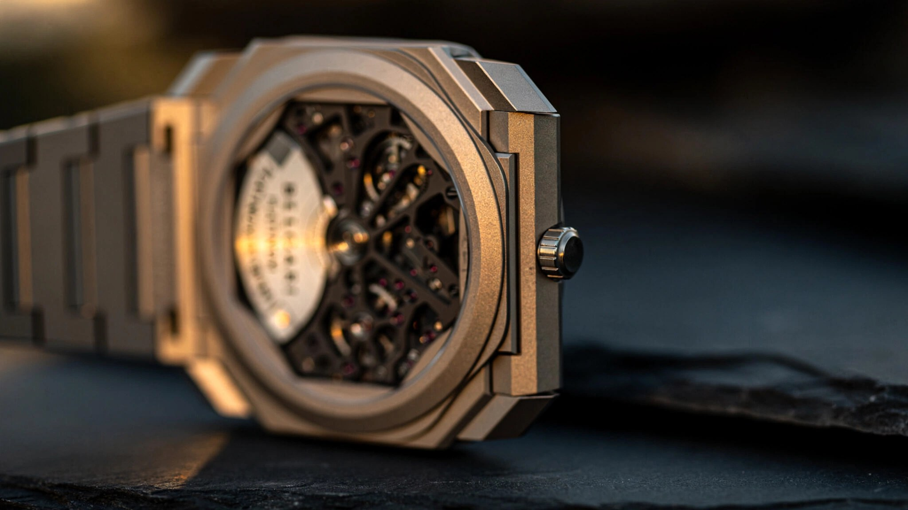

Twenty Percent Smaller, Twenty Percent Longer: Inside Bulgari's BVF 100
Bulgari spent three years engineering a movement that occupies less space than its predecessor while storing more energy. That sentence sounds like marketing. It isn't.

Miniaturization in watchmaking usually means sacrifice. Reduce the case diameter and you lose dial real estate. Shrink the movement and the mainspring barrel gets shorter, which means less stored energy, which means a shorter power reserve, which means the watch dies sooner on your nightstand. Every millimeter you surrender comes out of something the owner cares about. Bulgari's engineering teams in the Vallée de Joux spent three years trying to break that equation with the BVF 100 caliber, and at Watches and Wonders Geneva 2026 they showed the result: a movement whose total volume is 20 percent less than the BVL 138 it was designed alongside, yet whose power reserve is 72 hours compared to the BVL 138's 60. Smaller barrel, more energy, less space, longer run time.
That isn't supposed to work.
Eight Records in Eight Years
Understanding why the BVF 100 matters requires context, and Bulgari's context is a decade of systematic record-breaking that transformed the brand from a jeweler that happened to sell watches into a legitimate force in haute horlogerie movement engineering. Start in 2014, when the Octo Finissimo Tourbillon arrived with the hand-wound BVL 268 at 1.95 millimeters thick, the thinnest tourbillon movement anyone had ever built. Two years later, a minute repeater at 3.12 millimeters (caliber BVL 362) set the record for thinnest chiming watch. In 2017, the Octo Finissimo Automatic and its BVL 138 became the thinnest micro-rotor automatic in production at 2.23 millimeters, beating the legendary Piaget 12P by seven hundredths of a millimeter after Piaget had held that record since 1960. By 2022, Bulgari had accumulated eight world records across tourbillons, minute repeaters, automatics, chronographs, perpetual calendars, and the Octo Finissimo Ultra at a scarcely believable 1.80 millimeters total thickness, where the caseback literally serves as the movement's mainplate and the entire thing had to be machined from tungsten carbide because titanium would flex enough to bind the gear train.
Eight records in eight years. Not flukes or one-offs but a sustained engineering campaign funded by LVMH and executed by a technical team that clearly wakes up every morning wondering what else can be made flatter. So when Bulgari announces a new movement, even one for a watch that isn't chasing records, the engineering community pays attention because this is a brand that has proven it can build what it claims.
Why Smaller Was Harder Than Thinner
Every Octo Finissimo record before the BVF 100 attacked thickness. Reduce the movement's vertical dimension, reduce the case height, break the record. Thickness is the glamorous axis in ultra-thin watchmaking, the one that generates press releases and Hodinkee headlines. But diameter? Nobody talks about diameter because nobody cares about it directly. You can't feel a movement's diameter on your wrist the way you can feel case height against your shirt cuff.
Bulgari cared about it because they had a problem. Nine years of market feedback told them the same thing: collectors loved the Octo Finissimo's architecture, its octagonal geometry descended from a Gerald Genta design, its sandblasted titanium finishing, its radical thinness. But at 40 millimeters, it wore too large for a significant portion of potential buyers. Not because 40 millimeters is objectively big, plenty of sport watches run 42 or 44, but because the Octo Finissimo's flat profile and angular lugs create a visual footprint that reads larger than its diameter suggests. On a sub-seven-inch wrist, the watch dominated rather than dressed.
Shrinking to 37 millimeters sounds trivial. Three millimeters, less than the width of two stacked coins. But a 37-millimeter case cannot house a 36.60-millimeter movement, which is the diameter of the BVL 138. Not with case walls, not with the gasket channels required for water resistance, not with any reasonable tolerance for the crown tube and stem. Bulgari needed a movement narrow enough to fit inside a 37-millimeter octagonal case with room for everything else, and that meant starting from scratch.
31 Millimeters, 72 Hours
BVF 100. Thirty-one millimeters in diameter, 2.35 millimeters thick, automatic winding via a platinum micro-rotor, 72-hour power reserve at a 3 Hz frequency (21,600 vibrations per hour). Compare that to the BVL 138: 36.60 millimeters in diameter, 2.23 millimeters thick, same winding system, same frequency, but only 60 hours of power reserve.
The diameter reduction from 36.60 to 31 millimeters represents a 15 percent linear shrinkage. Because area scales with the square of the radius, the available plan-view area for the movement dropped by roughly 28 percent. And because the movement got slightly thicker (2.35 versus 2.23 millimeters, a gain of 0.12 millimeters), the net volume reduction comes to approximately 20 percent. Every component inside the movement, the gear train, the escapement, the balance wheel, the barrel, the micro-rotor, the bridges, had to be redesigned to fit within this smaller envelope. Nothing carried over from the BVL 138 unchanged.
Where did the extra power come from? Bulgari has not published a complete technical breakdown of the BVF 100's barrel architecture, and I have not handled the movement in person, so specifics here are inferred from what's publicly known. In micro-rotor movements, the mainspring barrel typically occupies a large percentage of the movement's plan area because the micro-rotor sits beside it rather than above it (unlike a full rotor, which stacks on top). A narrower movement means a narrower barrel, which ordinarily means a shorter mainspring, which means less energy storage. To compensate, Bulgari almost certainly optimized several variables simultaneously: barrel height (they had 0.12 millimeters of additional vertical budget), mainspring alloy and thickness (modern Nivaflex or equivalent high-energy-density alloys can store more torque per unit volume than older materials), and gear train efficiency (reducing friction losses between the barrel and the escapement so that more of the stored energy reaches the balance wheel rather than heating the bearings).
Twelve additional hours of power reserve from a 20-percent-smaller movement. That's not a rounding error. Somebody at Bulgari's manufacture solved a legitimate thermodynamic optimization problem, squeezing more usable energy out of less spring steel in less space, and then packaged the result under a display caseback finished with radiating Côtes de Genève that requires considerably more skill to execute than the standard parallel stripes most Swiss brands apply.
A Bracelet Worth Two Years
Watch enthusiasts have been complaining about the Octo Finissimo's clasp for nearly a decade, and Bulgari finally listened. On the 40-millimeter models, the folding clasp is a straightforward deployant that works but lacks the satisfying, secure snap that collectors expect at this price point. For the 37-millimeter version, Bulgari developed a push-button butterfly clasp that took two years to finalize. Two years for a clasp. If that sounds excessive, you have never tried to engineer a clasp mechanism thin enough to sit flush against a bracelet that's already thinner than most watch straps, strong enough to resist accidental opening during daily wear, and smooth enough to open with a single thumb press when you actually want to take the watch off.
More interesting is the bracelet itself, because previous Octo Finissimo bracelets used one-piece links, each link machined or stamped from a single piece of metal and then finished. One-piece construction limits what you can do with surface treatment: sandblasting the entire link is easy, polishing the entire link is easy, but sandblasting one surface while polishing another requires masking and produces inconsistent transition lines where the two finishes meet. Bulgari's new two-part link construction splits each link into separate components that are finished independently and then assembled, allowing clean, consistent transitions between brushed and polished surfaces. For the yellow gold variant (CHF 43,600), this means Bulgari can now offer a true two-tone bracelet execution for the Octo Finissimo, something previously impossible without visible finishing artifacts at the junction.
It's a detail most buyers will never consciously notice, and it represents the kind of invisible engineering that separates good manufacturing from excellent manufacturing. Two-part links cost more, require tighter tolerances, and introduce an additional assembly step. Bulgari did it anyway.
Sound Engineering at 6.85 Millimeters
Bulgari launched the 37-millimeter Octo Finissimo in four references: two in titanium (sandblasted at CHF 15,100 and satin-polished at CHF 15,700), one in 18-karat yellow gold (CHF 43,600), and a minute repeater limited to 20 pieces at CHF 161,000. Including a minute repeater in the launch lineup is not an accident. When Bulgari introduced the original 40-millimeter Octo Finissimo in 2014, the first model was a tourbillon, not the more accessible time-only piece. Starting with a complication makes a statement about the platform's mechanical credibility, and repeating that strategy with the 37-millimeter generation signals that Bulgari considers this a new platform rather than a size variation.
At 37 by 6.85 millimeters, the 37-millimeter minute repeater is the same thickness as its 40-millimeter predecessor (also 6.85 millimeters) and uses the same BVL 362 caliber at 3.12 millimeters. What changed is the acoustic architecture. Titanium is an acoustically challenging case material for a repeater because its density and damping characteristics absorb vibration rather than transmitting it, which is why most minute repeaters use gold or platinum cases that resonate more freely. Bulgari compensated by hollowing the inner walls of the titanium case and attaching the gongs directly to the case's interior surface, creating a larger vibrating surface area that projects sound more effectively. They also cut out the hour markers on the dial, transforming what would normally be solid applied indices into open voids that allow sound waves generated at the caseback to travel through the dial and toward the wearer's ear rather than being absorbed by a solid metal barrier.
Whether these acoustic modifications produce a minute repeater that sounds comparable to a gold-cased Patek Philippe or Vacheron Constantin is a question I cannot answer without hearing the watch in person. Titanium repeaters have historically been quieter and less melodic than their precious-metal counterparts, and clever engineering can narrow that gap but probably cannot close it entirely. At CHF 161,000 for 20 pieces, buyers are paying for extreme thinness and exclusivity rather than acoustic perfection, and Bulgari's honesty about the titanium choice, which was driven by weight and thinness requirements rather than sound quality, is refreshing in a market where brands routinely overstate their repeaters' acoustic performance.
Where Bulgari Sits Now
Bulgari is no longer competing for the title of thinnest automatic movement in production. At 2.35 millimeters, the BVF 100 is thicker than both the BVL 138 (2.23 millimeters, still in the 40-millimeter models) and Piaget's Altiplano Ultimate Concept at 2.00 millimeters total thickness. Vacheron Constantin's Caliber 2550 in the Overseas Self-Winding Ultra-Thin is also competitive at this scale, offering a slightly longer power reserve in a slightly different package. If thickness records are the metric, Bulgari already holds the crown with the BVL 138 and the frankly absurd BVL 180 in the Finissimo Ultra, and the BVF 100 wasn't designed to extend that streak.
What the BVF 100 represents is something more commercially significant: Bulgari proving that its ultra-thin engineering can scale down without compromise. Most brands that build a thin watch build exactly one thin watch, a halo piece that sits in a case at Baselworld and generates press coverage. Bulgari has built an entire family of thin calibers across time-only, tourbillon, repeater, chronograph, perpetual calendar, and skeleton complications, in case sizes from 37 to 40 millimeters, in materials spanning titanium, steel, gold, carbon, and tungsten carbide. Nobody else in the industry has this breadth of ultra-thin production capability, and the BVF 100 extends it into a case size that will sell in volumes the 40-millimeter never could because it fits more wrists.
At CHF 15,100 for the entry-level sandblasted titanium on bracelet, the Octo Finissimo 37 is priced below its 40-millimeter predecessor. For a watch housing a brand-new, three-year-development movement with a 72-hour power reserve, a redesigned bracelet with a purpose-built butterfly clasp, and a display caseback showing hand-finished radiating Côtes de Genève, that price is competitive against anything in the integrated-bracelet luxury sport watch category. A Royal Oak 15500 in steel starts above CHF 20,000 on the secondary market. A Nautilus, if you can find one at retail, lists at CHF 35,000. Neither houses a movement as thin as the BVF 100, neither offers 72 hours of power reserve, and neither weighs 65 grams.
Bulgari's problem has never been engineering but perception. Collectors still classify the brand as a jeweler first and a watchmaker second, despite a decade of record-breaking that no other single brand has matched in the ultra-thin discipline. If the 37-millimeter Octo Finissimo doesn't change that perception, nothing will, because this is an extraordinarily well-engineered watch at a price that makes its competition look either overpriced or under-engineered, and sometimes both.
| Specification | Octo Finissimo 37mm (BVF 100) | Octo Finissimo 40mm (BVL 138) |
|---|---|---|
| Case diameter | 37 mm | 40 mm |
| Case thickness | 6.45 mm | 5.15 mm (Ti) / 6.40 mm (steel) |
| Movement diameter | 31 mm | 36.60 mm |
| Movement thickness | 2.35 mm | 2.23 mm |
| Power reserve | 72 hours | 60 hours |
| Frequency | 3 Hz (21,600 VpH) | 3 Hz (21,600 VpH) |
| Winding | Platinum micro-rotor | Platinum micro-rotor |
| Water resistance | 30 m | 30 m (Ti) / 100 m (steel) |
| Weight (Ti) | ~65 g | ~72 g (est.) |
| Bracelet clasp | Push-button butterfly | Folding deployant |
| Price (Ti, bracelet) | CHF 15,100 | CHF 13,900 (at 2017 launch) |